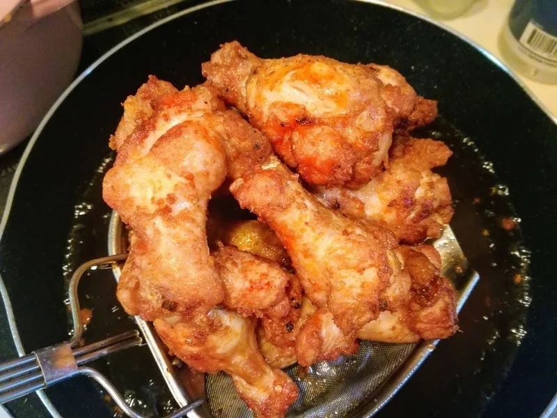

唐揚げ・天ぷら・フライ
おからパウダーの手羽元唐揚げ
おからパウダーを薄めにつけてじっくり揚げ、皮をパリッと仕上げる手羽元の唐揚げです。粉を厚く重ねないので、おからパウダーだけの衣を試してみたい
衣は記載の分量を基本にします。本書では追加する粉の種類と量を決めていないため、水や粉を足す前に、計量と材料が記載どおりか確かめてください。
洋風の味つけなので、そのまま食べるほか、サラダやサンドイッチにも使えます。チリソースやポン酢で味を変える時も、かける前にそのままの味を確かめると、調味料を足しすぎずに済みます。
揚げ焼きにする場合は、鍋底に当たる面が焦げないよう、返しながら加熱します。
元記事には揚げ時間の指定がありません。時間を決め打ちせず、衣の色だけで判断せずに、中心まで火が通ったか確かめてください。
加熱時間は作った時の目安です。容器や調理器具によって仕上がりは変わります。中心まで火が通っていることを確認してください。
やわらか洋風からあげクン風の材料・作り方（50kgdiet.com） →
このページは書籍の改訂原稿をもとに掲載しています。元記事は過去の記録のため、材料や表現が異なる場合があります。